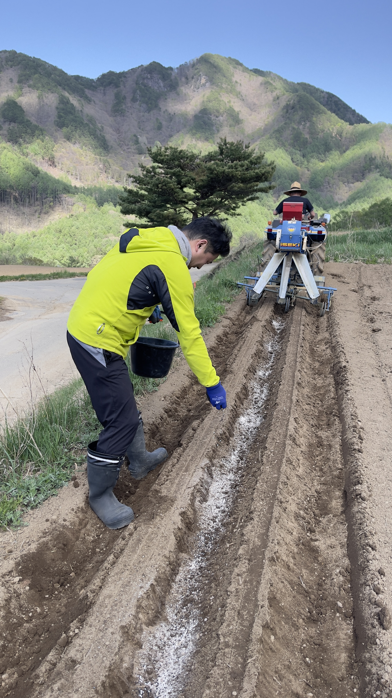
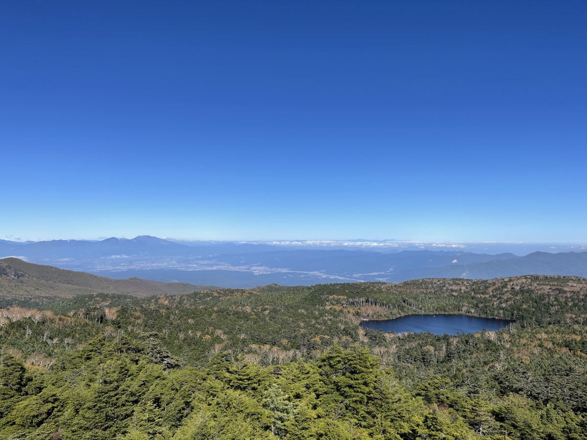
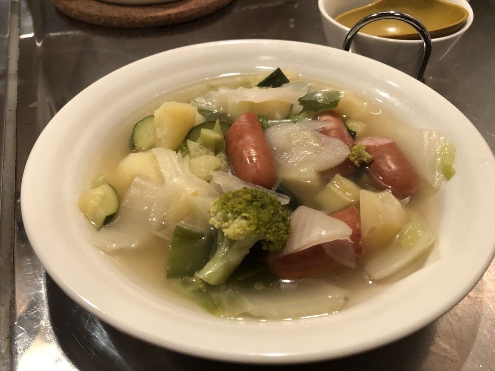
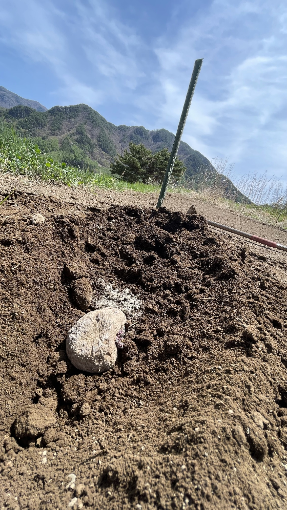

宿泊について
奥八ヶ岳の貸別荘で、
自然に包まれながら1泊をともにします。
豪華な宿泊というより、
自然の中で、少し肩の力を抜いて過ごすための、
素朴であたたかな時間を大切にしています。
※お布団を6組までご用意しています。
お部屋割りについて
1階：男性（最大3名）
2階：女性（最大3名）
男女別のお部屋のご用意となります。

2026年5月16日（土）〜17日（日）｜奥八ヶ岳
『自然・癒し・アニメ・海外
野菜作り・週末2拠点生活』
のある暮らしを、ゆるやかに味わう時間
八ヶ岳の自然の中で、
土にふれ、じゃがいもを植え、
ごはんを囲みながら、
好きなことやこれからの暮らしを語る。
そんな小さな時間を、
はじめてみようと思いました。
※雨天の場合は「薪棚作り・薪割り」などを行う予定。
土にふれて、
ごはんを囲んで、
語って、
少しゆるむ。
その中で、自分の中にある
「好き」
「こう生きたい」
「こんな時間がほしい」
を、少しずつ思い出していく会です。

僕自身、都会での仕事や生活の中で、
エネルギーが枯渇したり、
燃え尽きたようになったりすることを、
何度も経験してきました。
でも、奥八ヶ岳の自然の中で暮らし始めてから、
少しずつ体感としてわかってきたことがあります。
それは、まず自分を満たすこと。
そして、溢れた分で人を満たすこと。
その順番で生きないと、
いつまで経っても、
人生が息苦しいままなのかもしれない。
僕は、そう感じるようになりました。
だから今回の会も、
何かを頑張る場ではなく、
まず自分の心が少しゆるみ、
好きなことや大切にしたいことを思い出せる時間として
開きたいと思っています。

こうしたキーワードを、
堅く学ぶのではなく、
ゆるやかに味わいながら、
「こういう時間、いいな」
「こういう生き方もあるのかもしれない」
と感じられる二日間です。
じゃがいもを植えながら土にふれる。
自然の中で深呼吸する。
火を囲みながら、みんなで夕食を作る。
温泉でゆるむ。
好きなことを話す。
これからの暮らしや生き方を、少し自由に思い描いてみる。
そんな時間を、一緒に過ごします。

うまく話すことでも、
何か答えを出すことでもありません。
まずは、自分の心が少しゆるむこと。
安心してそこにいられること。
そして、自分の中にある
「好き」
「心が動くもの」
「本当はこう生きたい」
を、少しずつ思い出していくことです。
※ご家族での参加イベントは別途予定しております。
そうではなく、
土にふれる。
自然の中で少し力を抜く。
好きなことを安心して話す。
心がほどける感覚を取り戻す。
そんな時間を大切にする、小さな集まりです。
1日目
2日目
※雨天の場合は「薪棚作り・薪割り」などを行います。
※夕食の食材費は参加費に含まれます。
※ビールなどのお酒類は各自でご持参ください。
（お茶類・天然水・炭酸水メーカー・氷はご用意しています）
今回は少人数で開催します。
たくさんの人を集めるためではなく、
ひとりひとりが無理なく過ごせる空気を大切にしたいからです。
「話すのが得意ではない」
「初対面が少し緊張する」
そんな方でも大丈夫です。
無理に話さなくても大丈夫です。
そのままのペースでいていただけたらと思っています。
| 開催日 | 2026年5月16日（土）〜17日（日） |
|---|---|
| 場所 | 奥八ヶ岳リトリート 結びの杜 |
| アクセス |
・「奥八ヶ岳リトリート 結びの杜」をGoogleマップで検索ください 【お車の方】 ・中央高速をご利用の場合：須玉ICより1時間10分または長坂ICより50分 ・関越道〜中部横断自動車道をご利用の場合：八千穂ICより25分 【公共交通機関をお考えの方】 ・お申し込み前に別途ご相談ください。 |
| 内容 |
じゃがいも植え 自然の中で過ごす時間 みんなで夕食を作る時間（食材費込み） 温泉（各自実費） ゆるやかに語る時間 布団を自分で敷いて・片付ける体験 |
| 定員 | 少人数開催（4〜6名程度） |
定員6名まで
OVERNIGHT
じゃがいも植えと楽しむ会（貸別荘宿泊付き）
〜初開催特別価格〜
¥9,800 （税込）
じゃがいも植え＋みんなで夕食を作る時間＋温泉（各自実費）＋火を囲んで語る会＋貸別荘 宿泊
じゃがいも植えと楽しむ会（貸別荘宿泊付き）で申し込む
今回は初開催につき、特別価格でご案内しています。
お支払いと同時に、お名前・連絡先・アレルギー情報・お越しの交通手段をご記入いただきます。
※お支払い完了後、ご登録のメールアドレスにお支払い完了の確認メール（領収書）が届きます
奥八ヶ岳の貸別荘で、
自然に包まれながら1泊をともにします。
豪華な宿泊というより、
自然の中で、少し肩の力を抜いて過ごすための、
素朴であたたかな時間を大切にしています。
※お布団を6組までご用意しています。
お部屋割りについて
1階：男性（最大3名）
2階：女性（最大3名）
男女別のお部屋のご用意となります。
雨天の場合も、中止ではなく、
「薪棚作り・薪割り」など、雨除け準備をして開催予定です。
薪棚作りは、木材を組み合わせて薪を積み上げるための棚を手作りする作業です。
薪割りは、丸太を斧で割っていく作業で、やってみると夢中になる方が多い体験です。
どちらも、自然の中で体を動かしながら、無心になれる時間です。
実はこういった作業、今後の「楽しむ会」でも取り入れていく予定にしています。
雨の日には、一足先にその体験をお届けできたらと思っています。
この会は、畑作業だけが目的ではなく、
一緒に心地よい時間を過ごすことそのものを大切にしています。
| 開催7日前まで | 手数料を除いて返金（クレジット5% ／ 振込は振込手数料実費） |
|---|---|
| 開催6日前〜前日 | 参加費の50％ |
| 当日 | 参加費の100％ |
※キャンセルは極力ご遠慮ください。
※やむを得ない事情がある場合はご相談ください

今の自分に、こういう時間が少し必要かもしれない。
そう感じた方は、下のボタンからお申し込みください。